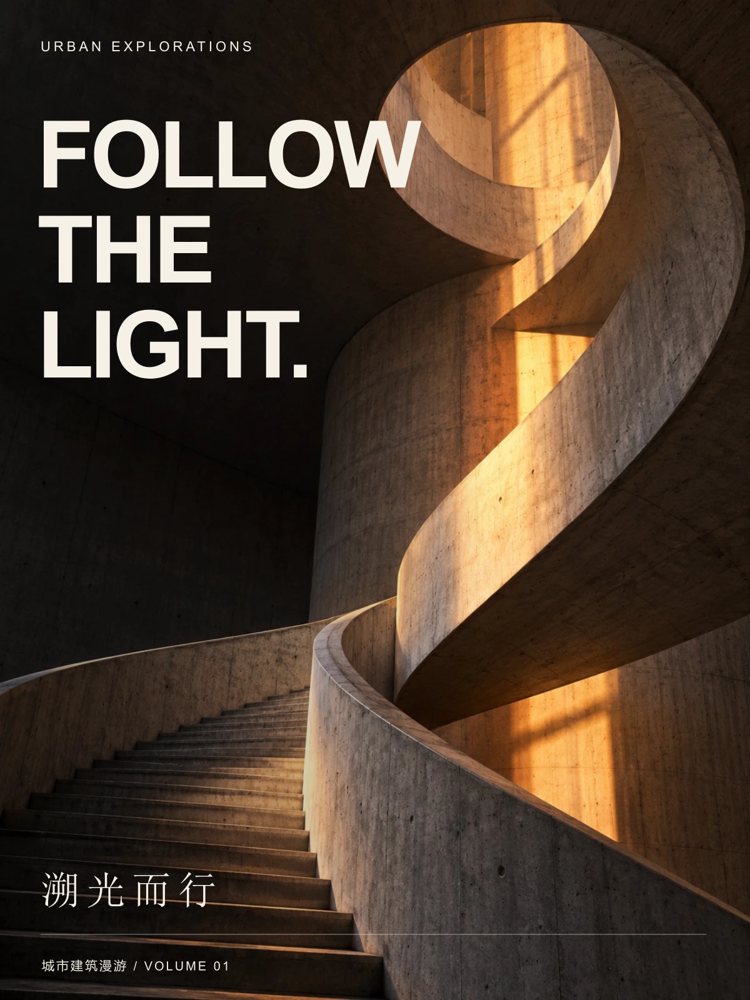
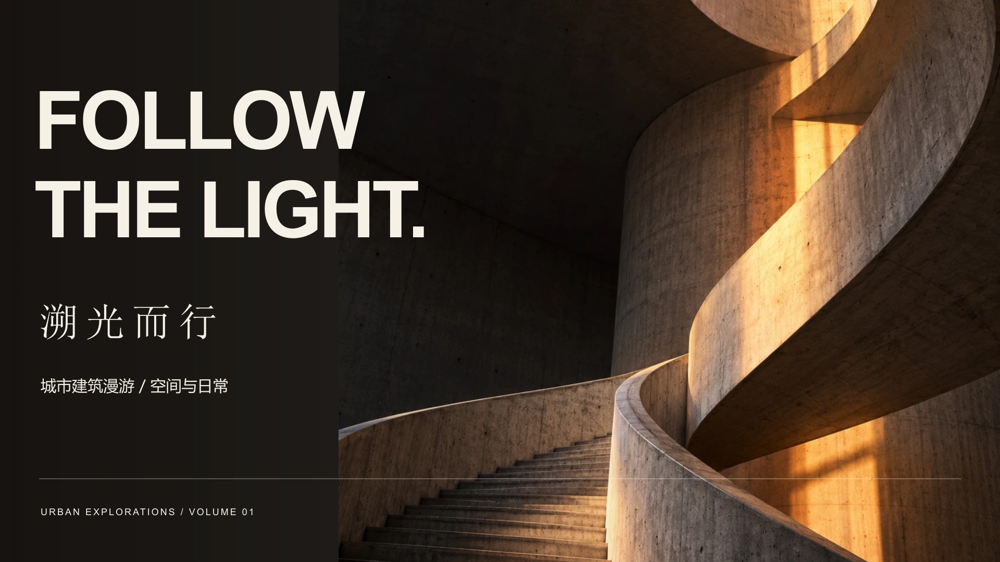
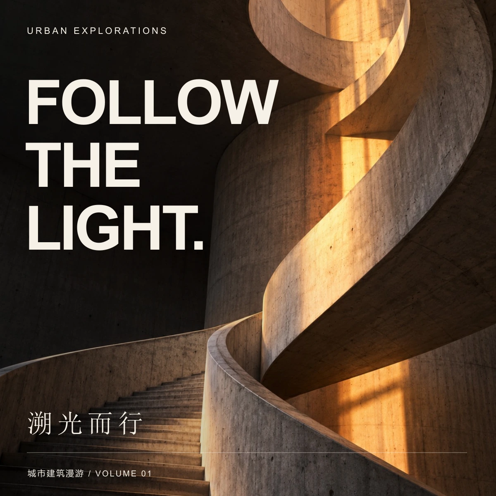

06 / 城市建筑活动视觉
CONCEPT PROJECT / 2026
溯光而行
Follow the light.
沿着光的方向，重新发现城市。

项目概念
城市建筑漫游的活动视觉概念。以旋转楼梯和斜射的日光，表现行走中的空间层次。
混凝土的灰褐色、琥珀色光线与极简文字形成对照。纵版强调建筑的向上延伸，横版则突出光线穿过曲面的瞬间。
横向表达
LANDSCAPE COMPOSITION / 16:9



06 / 城市建筑活动视觉
CONCEPT PROJECT / 2026
Follow the light.
沿着光的方向，重新发现城市。

城市建筑漫游的活动视觉概念。以旋转楼梯和斜射的日光，表现行走中的空间层次。
混凝土的灰褐色、琥珀色光线与极简文字形成对照。纵版强调建筑的向上延伸，横版则突出光线穿过曲面的瞬间。
LANDSCAPE COMPOSITION / 16:9

